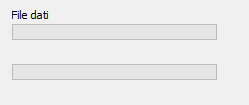
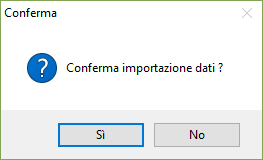
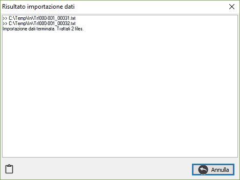

Importazione dati

Il programma consente di effettuare l'importazione dei dati relativi alle tabelle configurate, qualora esistano dati da
trasferire. All'ingresso del programma compare la richiesta di conferma presente a lato, premendo il bottone Si, nella finestra di trasferimento sarà visualizzata la progressione dell'operazione all'interno delle barre di File dati.La procedura utilizza un file che deve essere presente nella cartella indicata sull'anagrafica della sede, all'interno di un'ulteriore cartella IN ed aggiorna la tabella Storia trasferimenti con i dati relativi. Al termine dell'operazione sarà visualizzata una finestra contenente l'esito delle operazioni effettuate.

Tramite il pulsante Blocco note verrà aperto il Notepad di windows dove sarà automaticamente copiato il risultato dell'operazione che successivamente potrà essere modificato e salvato su disco.